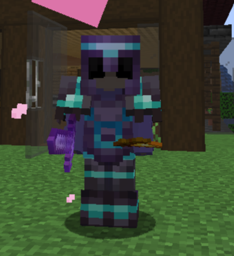

Luca - Der Naturverbundene Architekt
Luca, oder auch "Lukkaa" genannt, ist der Naturverbundene auf unserem Server. Seine Bauprojekte zeichnen sich durch organische Formen und harmonische Integration in die Umgebung aus. Luca hat einen zentralen Gemeinschaftsbaum geschaffen, der als Knotenpunkt für alle Spieler dient. Seine Liebe zur Natur spiegelt sich in jedem Detail seiner Architektur wider.
Luca's Projekte
Beschreibung von Luca's beeindruckenden Projekten auf dem Minecraft-Server.